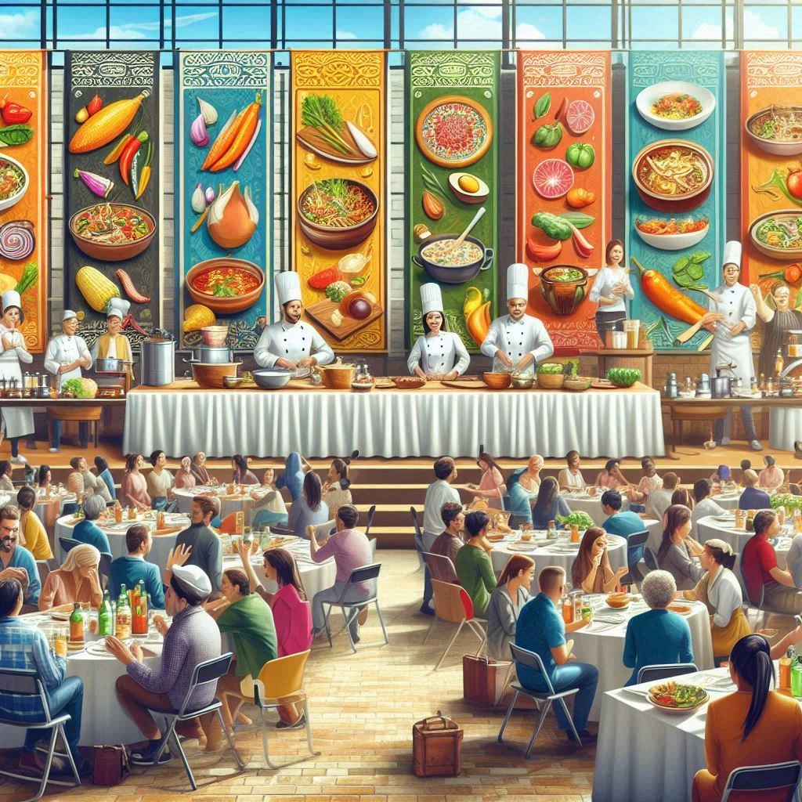

Jornadas de Cocina Tradicional · 12–14 mayo · Barcelona
Sabores de siempre,
cocina de hoy
Talleres, showcookings y charlas para recuperar la memoria gastronómica y adaptarla al siglo XXI.
Jornadas de Cocina Tradicional · 12–14 mayo · Barcelona
Talleres, showcookings y charlas para recuperar la memoria gastronómica y adaptarla al siglo XXI.